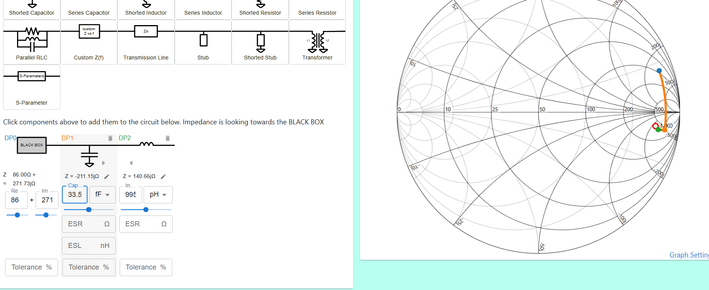
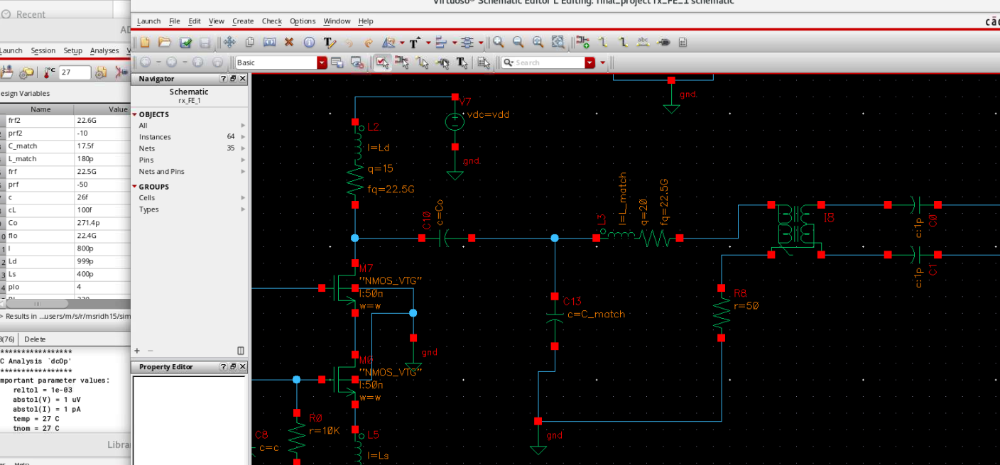
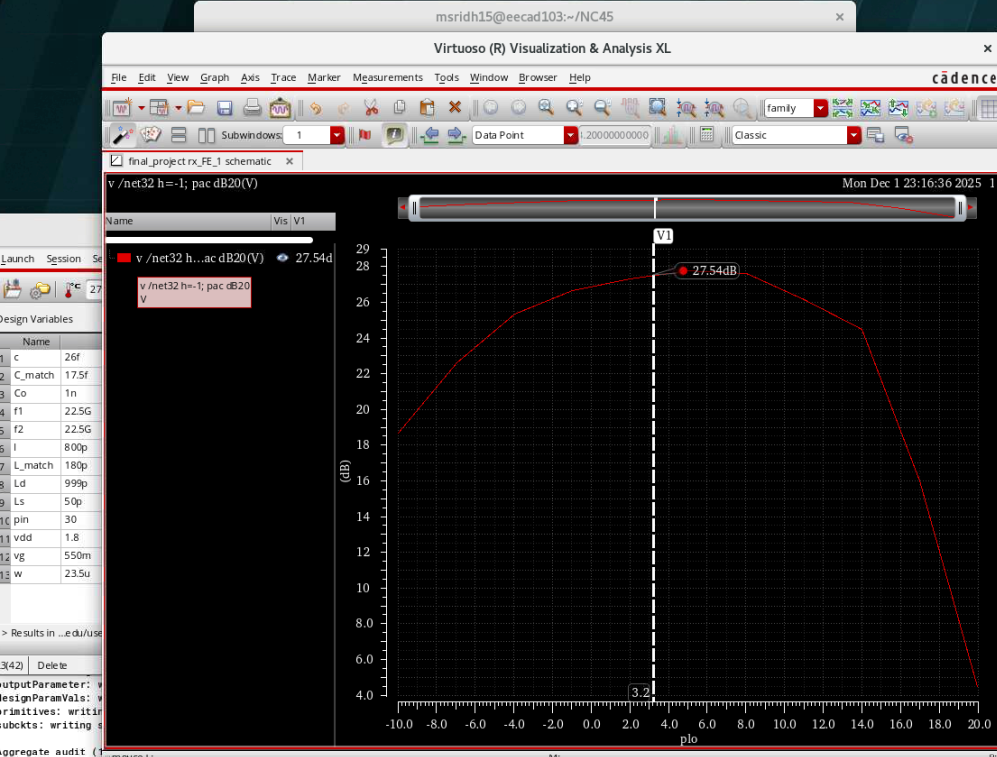
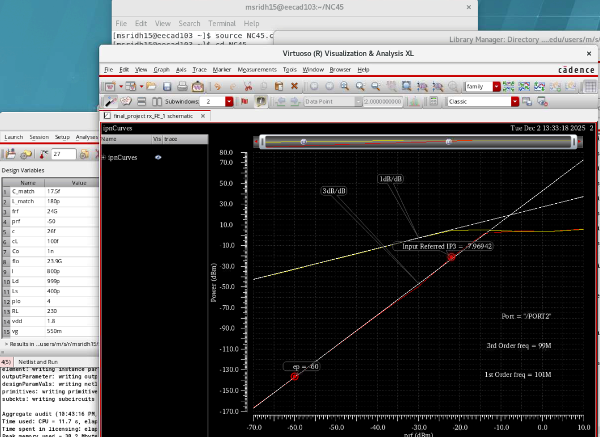
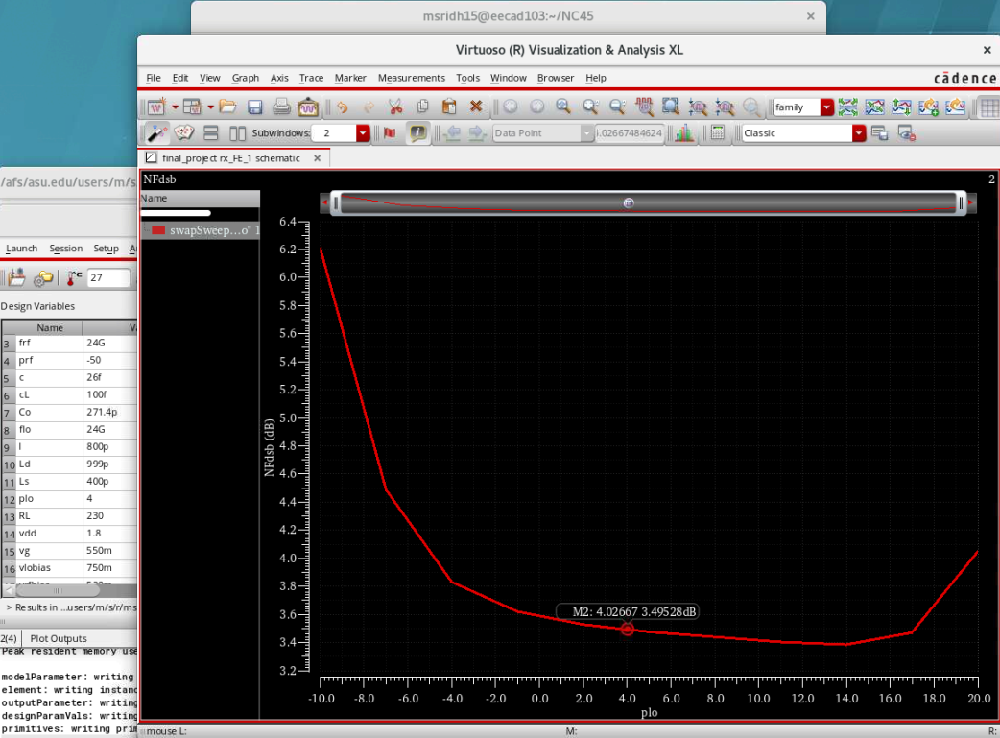
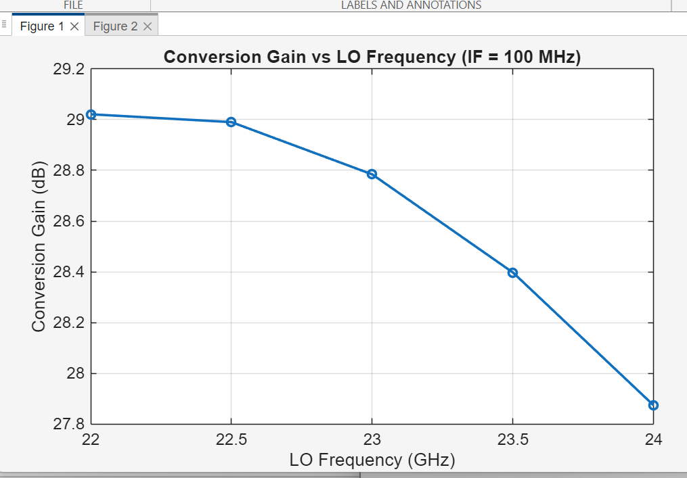
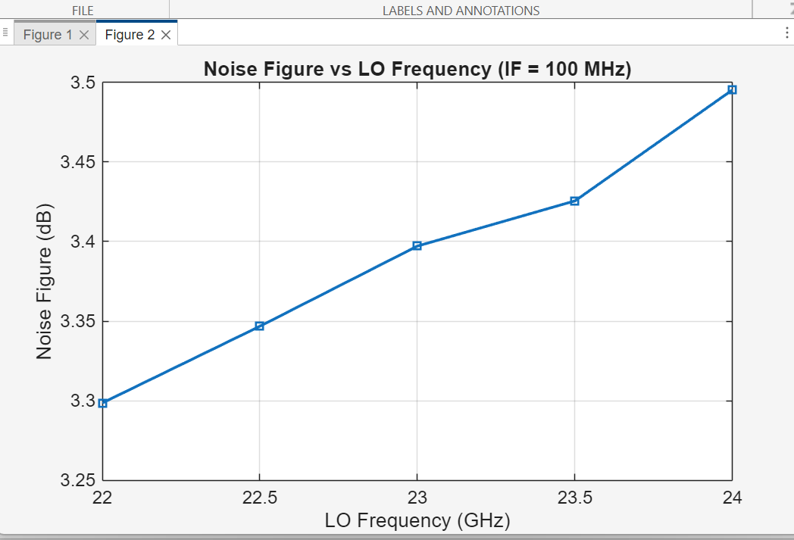
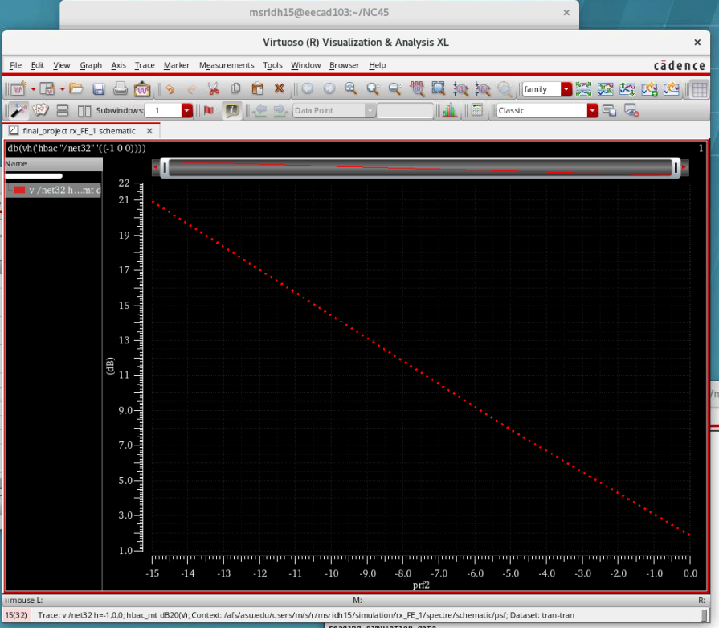
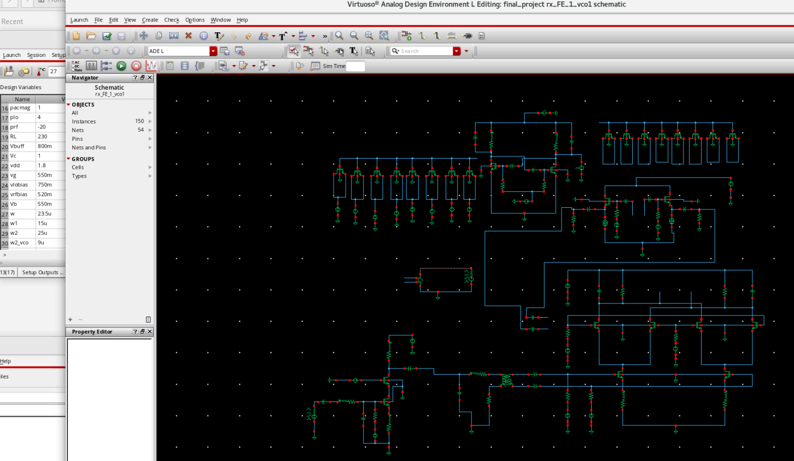
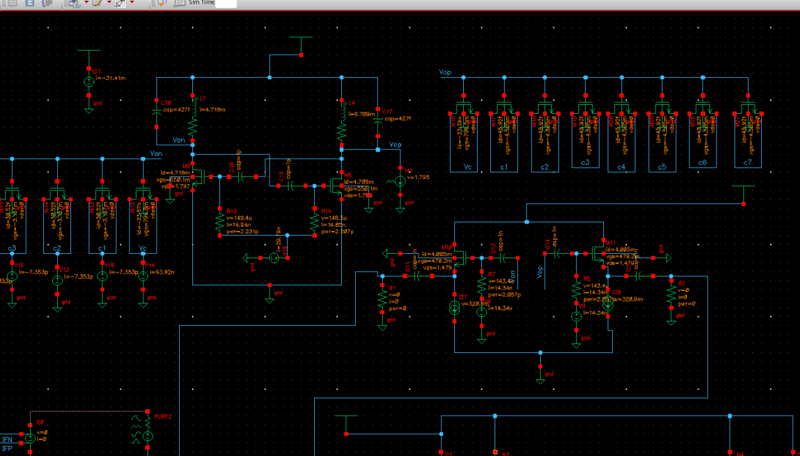

1. System Overview & Specifications
This project presents the complete design and integration of a
22 GHz mmWave receiver front-end using the individual
building blocks developed in previous projects: a low-noise amplifier (LNA),
a double-balanced Gilbert-cell mixer, and a differential LC VCO.
The goal was to demonstrate system-level optimization while meeting
stringent RF specifications under realistic power and layout constraints.
All circuits operate from a common 1.8 V supply.
Target Specifications:
Frequency Range: 21–24 GHz
Conversion Gain: > 27 dB
Noise Figure: < 4 dB
Input Match: S11 < −10 dB
IIP3: > −10 dBm
Power Consumption: < 60 mW (with VCO)
2. Receiver Architecture
The receiver consists of an RF LNA followed by a down-conversion mixer and a local oscillator. In Part I, an ideal LO source is used to evaluate the RF signal chain. In Part II, the designed VCO is integrated to form a fully self-contained receiver.
3. LNA–Mixer Conjugate Matching
 
Instead of matching each block to 50 Ω individually, the LNA output was
directly conjugately matched to the mixer RF input to maximize power transfer.
Extracted impedances at 22.5 GHz:
LNA Output: 85.98 + j271.73 Ω
Mixer Input: 186.03 − j172.67 Ω
A compact LC network was designed using a Smith chart to transform the LNA
output impedance to the conjugate of the mixer input impedance, significantly
improving S22 and overall receiver gain.
4. Conversion Gain & Linearity

With optimized biasing and matching, the receiver achieves a
peak conversion gain of 27.5 dB.

Two-tone simulations at 24 GHz confirm an
IIP3 of −7.97 dBm, meeting the system requirement.
A careful trade-off between LNA bias current and mixer transconductance
was used to balance linearity, gain, and power consumption.
5. Noise Figure Performance
The receiver achieves a minimum noise figure of 3.49 dB across the operating band. Noise contribution analysis shows that the LNA dominates the overall NF, validating the front-end noise optimization strategy.
6. Wideband Frequency Performance
 Sweeping the LO frequency from 21–24 GHz with a fixed IF of 100 MHz shows stable receiver performance across the band. Conversion gain decreases slightly at higher frequencies due to reduced switching efficiency and increased parasitic effects, while NF remains below 4 dB throughout.
7. Interference & Gain Degradation
The receiver was tested under a strong adjacent-channel interferer. As interferer power increases beyond −10 dBm, noticeable gain degradation occurs due to mixer compression and desensitization, which is consistent with expected mmWave receiver behavior.
8. LO Leakage Sensitivity

Device mismatch was intentionally introduced in the mixer transconductance devices to evaluate LO leakage. While ideal symmetry results in near-zero leakage, mismatch produces observable LO feedthrough at the IF port, highlighting the importance of layout symmetry in high-frequency designs.
9. Full Receiver with Integrated VCO
 The designed differential VCO was integrated as the LO source, forming a complete receiver front-end. The total DC power consumption increases to ≈ 56.5 mW, remaining within the system constraint. Transient and spectral simulations confirm correct down-conversion and stable LO operation.
10. Final Summary
This project demonstrates a fully integrated mmWave receiver front-end meeting gain, noise, linearity, and power specifications. It highlights practical system-level RF design trade-offs and showcases end-to-end transceiver integration suitable for 5G applications.